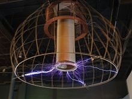
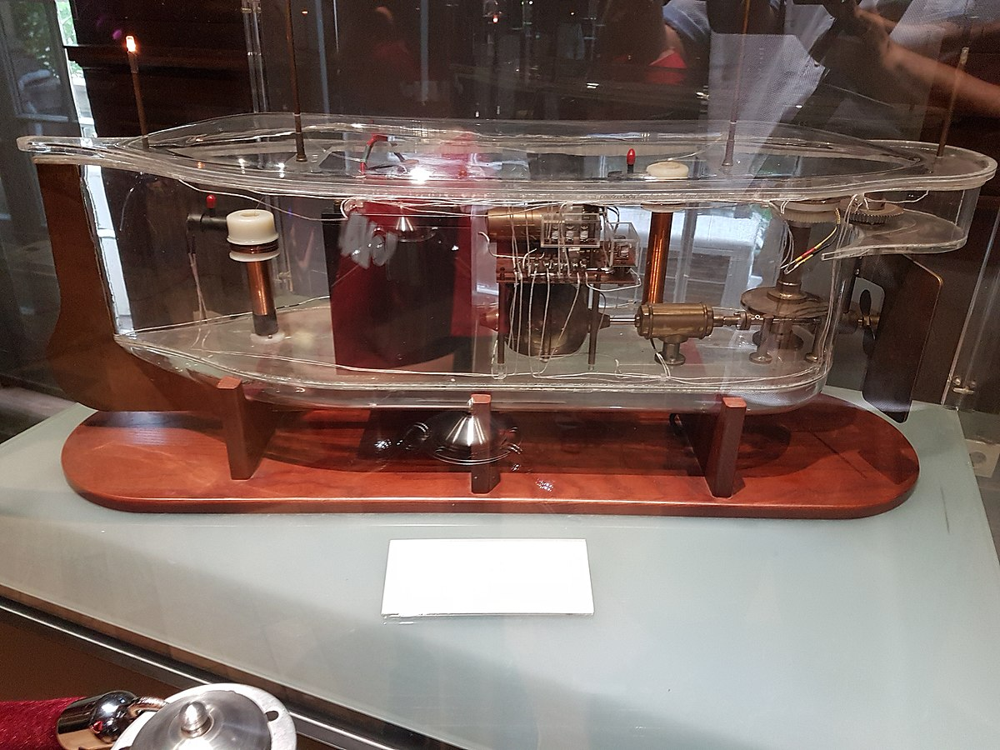
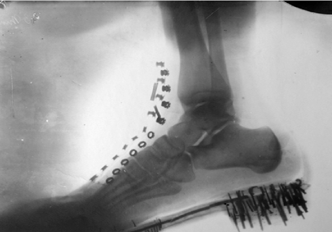
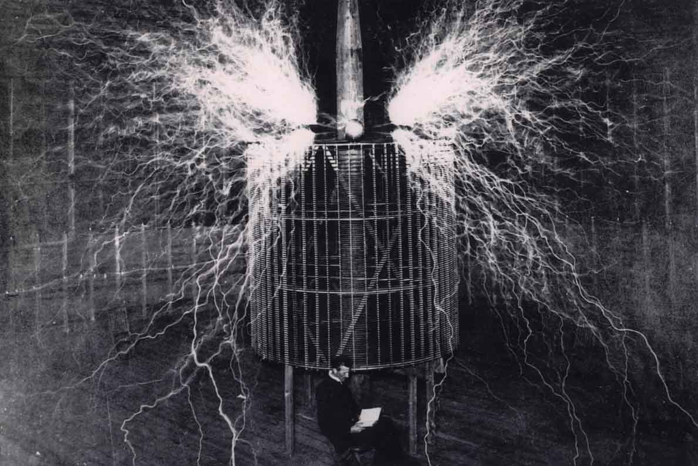

Le tableau des inventions les plus importantes de Nikola Tesla met en évidence certaines de ses inventions les plus remarquables, notamment le courant alternatif, le transformateur, la bobine Tesla, la résonance, la radio, la télécommande, les rayons X et l'énergie sans fil. Cependant, ces inventions ne représentent qu'une partie des travaux de Tesla, car il a également réalisé des contributions majeures dans des domaines tels que la turbine à vapeur, le moteur à induction, l'ampoule fluorescente et le laser. En somme, le tableau met en évidence le génie inventif de Tesla, dont les contributions ont eu un impact durable sur de nombreuses technologies et continuent d'inspirer les inventeurs et les scientifiques d'aujourd'hui.
 Tableau des inventions les
plus importantes de Nikola Tesla
Tableau des inventions les
plus importantes de Nikola TeslaNikola Tesla était un inventeur prolifique qui a réalisé de nombreuses découvertes et inventions tout au long de sa vie. Ce tableau présente certaines de ses inventions les plus importantes, accompagnées d'images pour mieux les visualiser.
| Invention | Description | Image |
|---|---|---|
| Courant Alternatif (AC) | Le courant alternatif (AC) est une forme d'électricité qui change régulièrement de direction, ce qui permet une transmission plus efficace sur de longues distances. |  |
| Transformateur | Un transformateur est un appareil électrique qui permet de modifier la tension d'un courant électrique. |  |
| Bobine Tesla | Une bobine Tesla est un type de transformateur résonnant qui produit des arcs électriques haute tension et des décharges électriques. |  |
| Résonance | Tesla a découvert la résonance électrique, qui a été utilisée dans de nombreuses inventions, notamment la radio. |  |
| Radio | Tesla a travaillé sur la radio pendant de nombreuses années et a déposé plusieurs brevets importants pour cette invention. |  |
| Télécommande | Tesla a inventé un système de télécommande qui a été utilisé pour contrôler des bateaux et des jouets. |  |
| Rayons X | Tesla a travaillé sur les rayons X et a inventé un tube à rayons X amélioré. |  |
| Énergie sans fil | Tesla a étudié les moyens de transmettre de l'énergie sans fil et a inventé un système de transmission sans fil. |  |
En plus des inventions mentionnées dans le tableau, Nikola Tesla a également réalisé de nombreux autres travaux importants tout au long de sa vie. Voici quelques-uns de ses autres domaines de recherche et inventions notables :
Turbine à vapeur : Tesla a travaillé sur une turbine à vapeur sans pales, qui a été utilisée dans de nombreuses centrales électriques pour produire de l'électricité. Cette invention a été considérée comme un grand pas en avant dans la production d'énergie électrique.
Moteur à induction : Tesla a inventé un moteur à induction électrique, qui est maintenant largement utilisé dans les appareils électriques de toutes sortes. Ce moteur est particulièrement utile car il ne nécessite pas de contacts électriques pour fonctionner, ce qui le rend plus fiable et plus facile à entretenir que d'autres types de moteurs électriques.
Ampoule fluorescente : Tesla a travaillé sur une ampoule fluorescente, qui a été utilisée pour produire de la lumière plus efficacement que les ampoules incandescentes traditionnelles. Cette invention a été importante car elle a permis d'économiser de l'énergie et de réduire les coûts d'électricité.
Laser : Tesla a également travaillé sur des concepts précurseurs au laser, qui ont été développés plus tard par d'autres scientifiques pour créer la technologie laser que nous utilisons aujourd'hui.
La liste des réalisations de Nikola Tesla est impressionnante, et il est considéré comme l'un des plus grands inventeurs de tous les temps. Ses contributions ont été essentielles pour le développement de nombreuses technologies que nous utilisons aujourd'hui, et son travail continue d'inspirer les scientifiques et les ingénieurs du monde entier.
Nikola Tesla
Si vous voulez trouver les secrets de l’univers, pensez en termes d’énergie : fréquence et vibration.
Les créateurs de ce site dédié à Nikola Tesla : Messai Koussaila et Sene Mamadou.